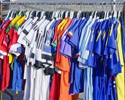

I have been building my collection for a long time. I love studying kit design and how the shirts are made. There are actually many different types of football shirts. For example, a player-version jersey is made exactly like the ones the real athletes wear, so it has a tighter fit and lighter fabric than a normal fan shirt.